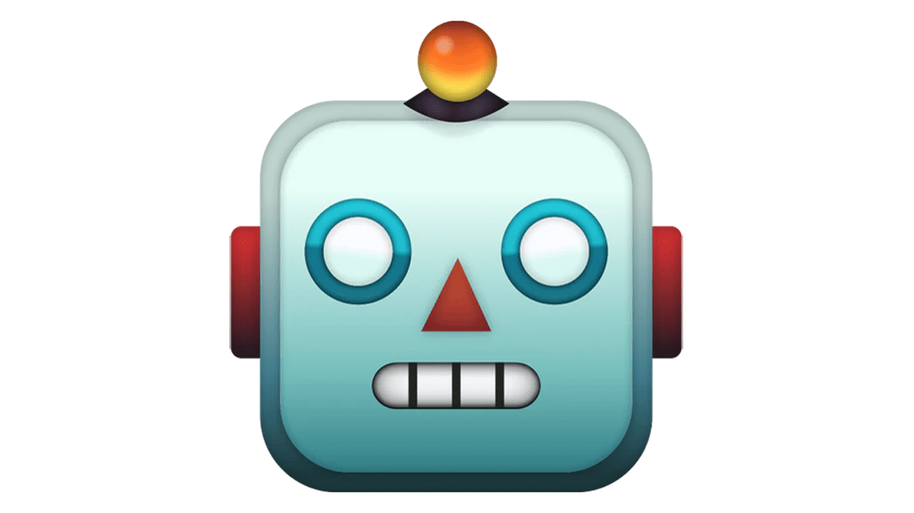

CEO
Luigi was born and raised in Bari (Italy). He completed his undergraduate studies in Bari, and pursued his MSc in Turin and Lausanne. He earned his PhD in AI and Robotics from the University of Oxford, where he developed one of the first three locomotion controllers in the UK based on Deep Reinforcement Learning.

CTO, Control
Has extensive expertise (PhD) in controlling articulated systems using both traditional and learning-based methods.
CTO, Perception
Has extensive experience (PhD) in SLAM and learning-based methods for vision pipelines.